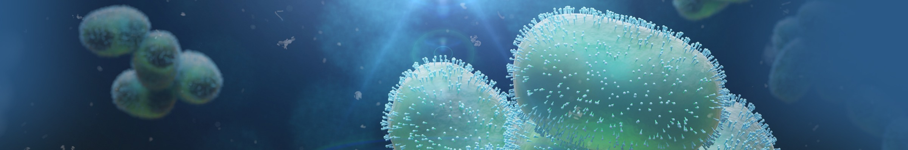

Data from Arbovirus research projects, including OHPACT consortium, on the surveillance and study of arboviruses across the Netherlands.


The Pathogens Portal Netherlands provides information about available datasets, resources, tools and services related to pathogens research in the Netherlands. This portal is part of the Network of Pathogen Portal Nodes (www.pathogensportal.org) with the aim to showcase and provide quick access to a collection of biomolecular and other pathogen related data for open science from Dutch institutions and collaborations. The first datasets that are made available are from Arboviruses, with others to follow. We encourage Dutch researchers to share their data in compliance with the FAIR Data Principles, which promote the Findability, Accessibility, Interoperability, and Reusability of data, using publicly accessible and FAIR digital repositories like those hosted at The European Bioinformatics Institute (EMBL-EBI). See more details under the section “Share Data”. For more questions regarding data sharing via this portal contact pathogensportalnl@erasmusmc.nl.
Data from Arbovirus research projects, including OHPACT consortium, on the surveillance and study of arboviruses across the Netherlands.
Data from the SENTINEL research project on the surveillance of respiratory viruses in healthcare and animal workers in the Netherlands.